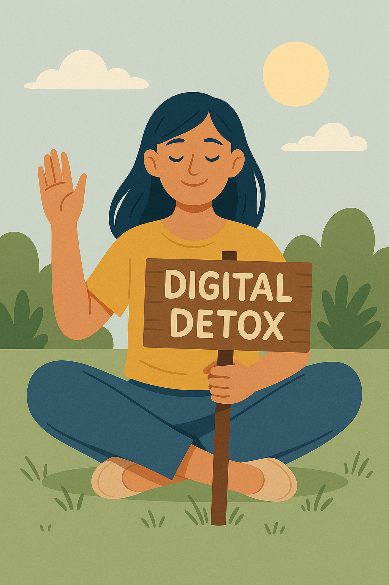
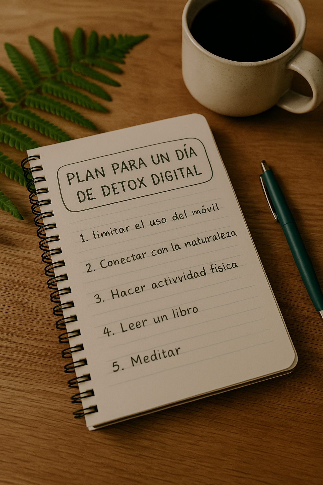

Cómo organizar un día digital detox
¿Sientes que no puedes despegarte del móvil? ¿Te abruma pasar horas frente a la pantalla? Un digital detox o desintoxicación digital, es una excelente forma de recargar la mente, mejorar el estado de ánimo y reconectar contigo mismo.
¿Qué es un digital detox?
Es un periodo en el que te desconectas voluntariamente de las pantallas: redes sociales, correo, apps, televisión. Ya sea por unas horas o un día completo, la meta es liberar tu atención para enfocarte en lo que realmente importa.
Beneficios de desconectar
- Menos ansiedad y sobrecarga mental.
- Mayor presencia en el momento.
- Mejor calidad de sueño.
- Conexión con uno mismo y los demás.
- Más creatividad y claridad.
¿Te cuesta relajarte? Te recomendamos estas pausas conscientes para calmar la mente.
Cómo preparar tu día de detox digital
- Avisa a tus contactos: para que no se preocupen si estás offline.
- Elige un día: idealmente fin de semana o feriado.
- Deja el móvil lejos: o en modo avión.
- Planifica actividades sin pantallas: paseos, lectura, escritura, meditación.
- Crea un entorno relajante: puedes diseñar tu rincón de paz en casa.
Ideas para tu día sin pantallas
- Escribir en tu journal o cuaderno.
- Probar alguno de estos micro-hábitos para el bienestar diario.
- Despertarte sin el móvil y seguir esta rutina mañanera para reducir el estrés.
- Hacer yoga suave o estiramientos.
- Preparar una comida consciente sin distracciones.
Consejos finales para mantener la motivación
- Guarda tus apps en una carpeta o desactiva notificaciones.
- Reflexiona cómo te sentiste al final del día.
- Hazlo con alguien más y comparte la experiencia.
- Empieza con 2-3 horas si un día entero parece mucho.
✅ Descubre cómo planearlo este fin de semana. Regálate un día para ti, sin distracciones.